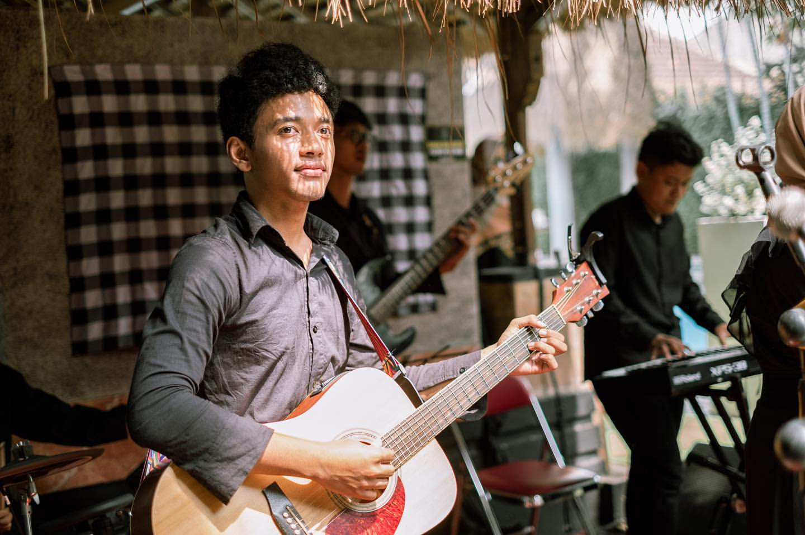
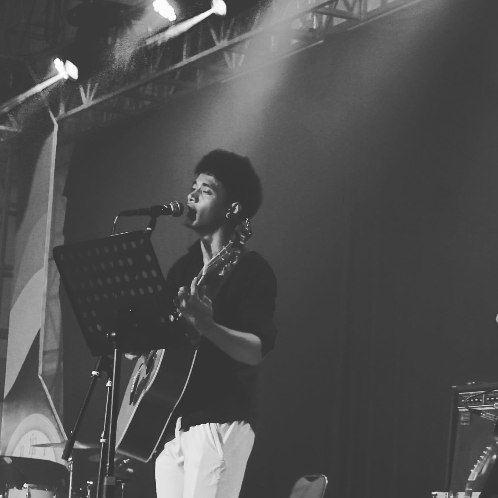
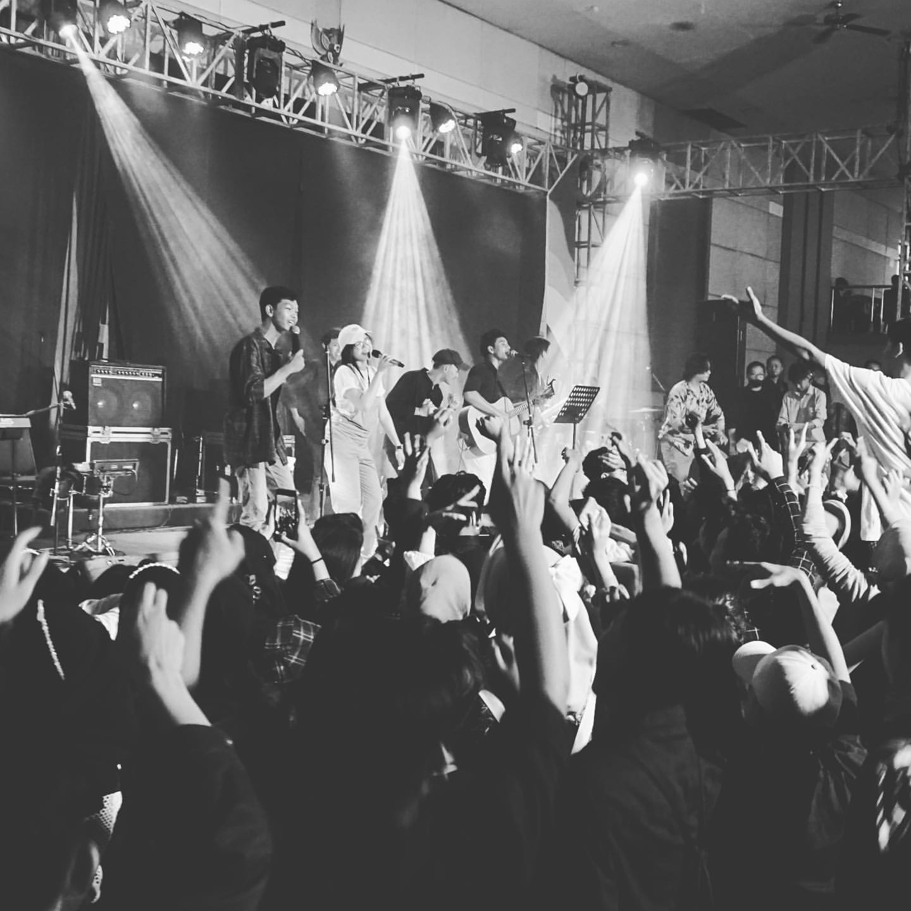
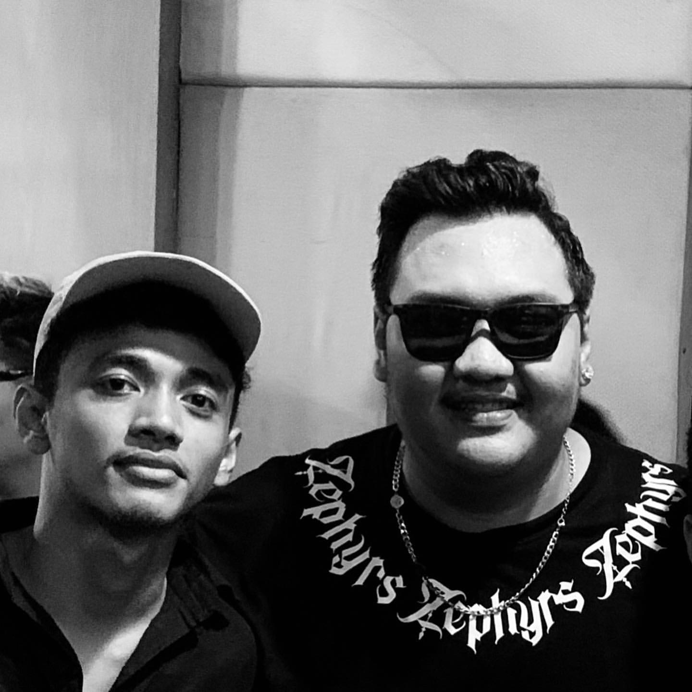
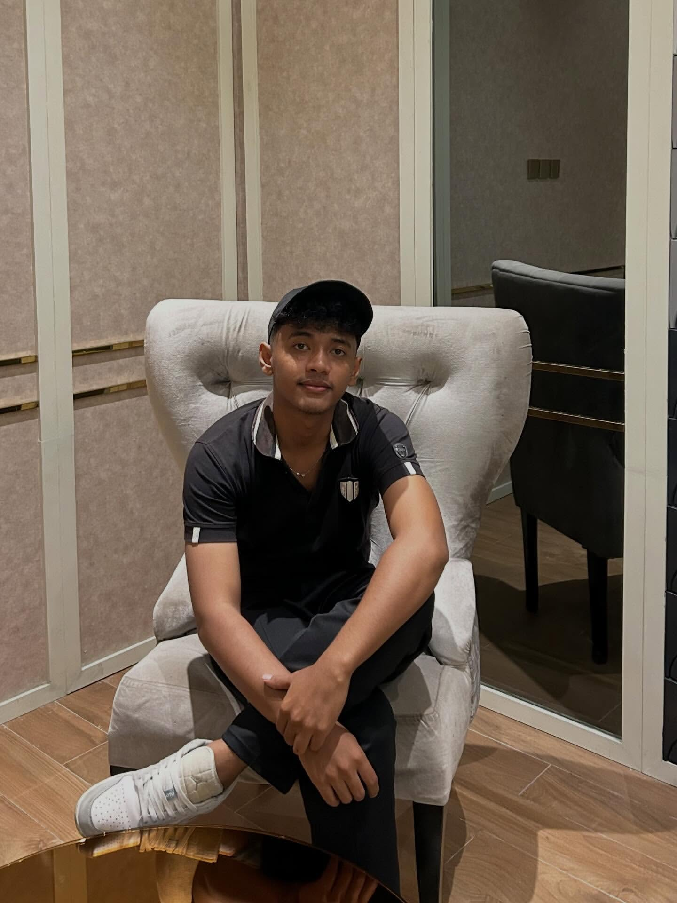

1
Juara 1 Lomba Basket Putra
Tingkat Kota Madiun
2017Mahasiswa yang aktif di dunia entertainment dan olahraga. Saya bermain di band hiburan di Kota Madiun, bekerja freelance di bidang entertainment, dan meraih banyak juara tingkat kota.

Latar belakang pendidikan, minat, dan kegiatan yang saya jalani.
Sejak sekolah dasar saya aktif di olahraga dan musik. Basket, tolak peluru, dan lempar lembing melatih disiplin dan mental juara, sedangkan gitar membawa saya ke panggung.
Saat ini saya aktif di sebuah band entertainment di Kota Madiun dan bekerja freelance di bidang entertainment. Di bangku kuliah, saya belajar membangun kehadiran digital agar karya dan pengalaman saya mudah ditemukan, termasuk lewat halaman portofolio ini.
Penghargaan di bidang olahraga dan musik, dari tingkat kota sampai turnamen basket.
Tingkat Kota Madiun
2017Cabang atletik
2018Tingkat Kota Madiun
2018Penghargaan di bidang musik
2018TDM Cup
2023Willis Basketball Cup
2023Keterampilan yang saya kuasai dari panggung, lapangan, dan kuliah.
Tampil di berbagai acara sebagai bagian dari band entertainment di Kota Madiun.
Bekerja lepas di bidang entertainment dan terbiasa bekerja dengan jadwal acara.
Halaman portofolio ini, dibuat sebagai tugas individu dengan HTML, CSS, dan JavaScript.
Momen saat bekerja, tampil, dan keseharian. Klik foto untuk memperbesar.






Butuh pengisi acara, musisi, atau ingin berdiskusi? Kirim pesan langsung ke WhatsApp saya.
Hubungi Saya via WhatsApp